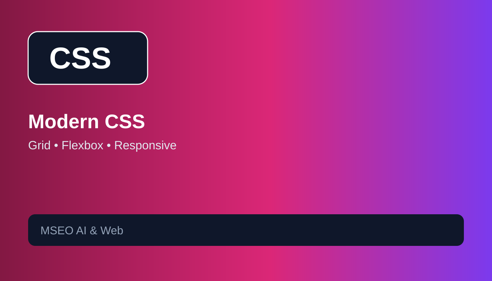

كيفية إنشاء موقع احترافي بالذكاء الاصطناعي من الصفر في 2026
دليل عملي للتخطيط وبناء موقع حديث بالذكاء الاصطناعي.
قراءة المقالدليل عملي للتخطيط وبناء موقع حديث بالذكاء الاصطناعي.
قراءة المقال الذكاء الاصطناعي
الذكاء الاصطناعيأمثلة عملية لصياغة Prompts دقيقة لكتابة ومراجعة الكود.
قراءة المقالبنية HTML الدلالية وعلاقتها بالوصول ومحركات البحث.
قراءة المقال
تصميم المواقعأساسيات CSS الحديثة لبناء واجهات متجاوبة.
قراءة المقال البرمجة
البرمجةممارسات عملية لتنظيم JavaScript وتحسين الصيانة.
قراءة المقال SEO
SEOمنهج عملي لبناء محتوى يخدم نية البحث.
قراءة المقالدليل النشر والاستضافة على GitHub Pages.
قراءة المقالشرح عملي للبيانات المنظمة والمخططات المناسبة للمقالات.
قراءة المقالخطوات عملية لتحسين الأداء وتجربة المستخدم.
قراءة المقال